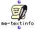

OpenMusic DocumentationHiérarchie de section : OM 6.6 User Manual > MIDI > MIDI Objects > MIDI Events
OpenMusic DocumentationHiérarchie de section : OM 6.6 User Manual > MIDI > MIDI Objects > MIDI Events
Navigation : page précédente | page suivante
Attention, votre navigateur ne supporte pas le javascript ou celui-ci à été désactivé. Certaines fonctionnalités de ce guide sont restreintes.
MIDI Events
All OM score and MIDI objects can be traduced (with more or less precision or data loss) into a list of time-tagged MIDI events.
The MIDIEvent box represents this basic MIDI element as an object in OM visual programs.
The MIDIEvent Box
The MidiEvent box represents a single MIDI event in OpenMusic. The slots of the MidiEvent class are type, date, track, port, channel, and fields. In-popup menus and MIDI selection tools can help setting the MidiEvent box inputs. |

|
Attributes of MIDI Events
Selection Tools for Setting MIDI Event Inputs
A "Musical" Object
As other musical objects, MIDIEvent can be "played", that is, sent to a MIDI output port. It can also be used and send MIDI messages at a given time in a maquette.

Playing Objects
Delay
If a date is set for a MidiEvent, it will be sent at the corresponding time (in miliseconds) after playing starts.
Extracting / Processing MIDI Events
Any types of MIDI or musical object (chord-seq, voice, note, eventmidi-seq, midifile, midicontrol, midi-mix-console,...) can be converted into a list of MidiEvents using the method get-midievents. It's a very useful function, allowing all kinds of conversions and "MIDI processing" of the objects. |

|
This function has an optional input where a lambda function can be connected to test and filter the MidiEvents.
Some predefined functions in the MIDI / Filters menu can be used for this purpose :

test-date : tests if the MidiEvents occurs beween a min date and a max date.
test-type : tests the MidiEvent type.
test-track : tests the MidiEvent track.
test-port : tests the MidiEvent port.
test-channel : tests the MidiEvent channel.
MidiEvent-filter : test various of the MidiEvent slots (type, track, port, channel).
Test on a MIDI Event

Filter MIDI Events from a Container Object
In this example, we filter all MidiEvents from a MidiFile with the same test as in the previous example. Get-midievents outputs a list containing all MidiEvents which channel = 1. The resulting list can be saved as a new MidiFile, or stored in a EventMidi-seq object. |

|
About EventMidi-seqs
Tests as Lambda Boxes
The test function is a parameter of get-midievent; it must be a lambda function and have only one free input (for the MidiEvents to be tested).
More About Lambda Boxes
Designing Filter Functions
For more complex filtering functions, a patch (also set as a lambda box, with a single free input) can also be plugged to the get-midievents test input : |

|
This is an example of what could be inside the patch test-func : |

|
textual Events
Some MIDI events types are called "textual" (e.g. SeqName, InstrumentName, Lyrics, Copyright, ...). It means that their contents (or "fields") are a encoded textual data. To translate these fields into text (strings), use the me-textinfo method (can be applyed to MidiEvents or MidiEvents lists). |

|
Références :
Plan :
Navigation : page précédente | page suivante
A propos...(c) Ircam - Centre Pompidou